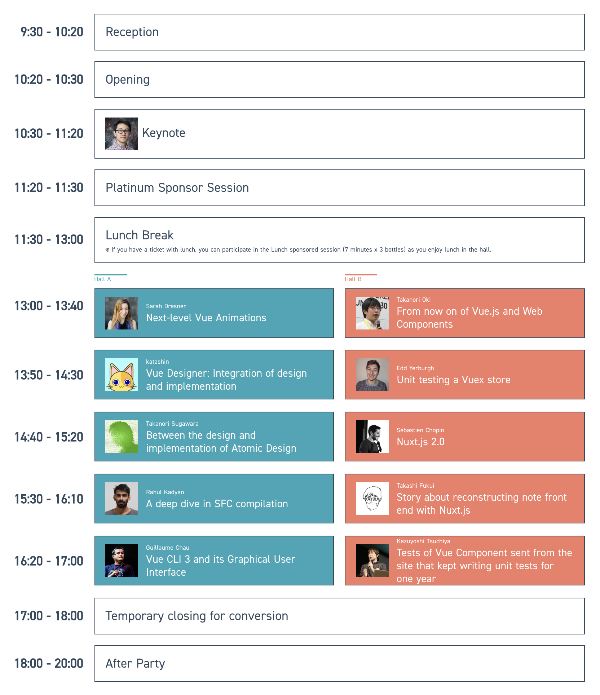

Vue Fes Japan 2018 に行ってきた
Nov 3, 2018
Event detail
- 2018.11.3 (Sat.)
- Akihabara UDX 4F / UDX Gallery
- タイムテーブルはこちら

Keynote
by @youyuxi
Vue3.0 の話
- TL;DR;
- 速く，小さく，メンテしやすく，ネイティブ向け，保守性
- 速く
- Virtual DOM 実装をフルスクラッチから作り直し
- mount と patch 処理が最大100%向上
- 言語標準の最適化によって速度向上
- Map/Set/WeakMap/WeakSet
- Class
- プロパティプロキシの高速化
- Object.definePropertyは使わなくなる
- ネイティブプロキシ
- 実行時オーバーヘッド削減のため，コンパイル時にヒントを追加
- React の JSX に似ている
- lazy function
- Reactではこの仕組みを使っていない
- Static Tree Hoisting
- 変更がなかったとしてもそれを調べる必要があった
- コンポーネントのインスタンス化の効率化
- 速度２倍，メモリ使用量半減
- Virtual DOM 実装をフルスクラッチから作り直し
- 小さく
- Tree-shakingへの対応
- 使われない処理を，バンドルから取り除く機能
- webpackとかにもこの機能はある
- ランタイムサイズ10kb以下(GZip)
- Tree-shakingへの対応
- メンテしすく
- よりネイティブ向けにつくりやすく
- カスタムレンダラAPI
- 保守性向上
- リアクティビティAPI
- Observer メソッドが追加される
- Render Track
- 再描画の仕組みが分かりづらかった
- renderTriggered callback が追加される
- 保守性
- TSX TS Support の強化
- Warningもわかりやすくなる
- 実験的なHooks API
- 実験的なTimeSlicing
- 必要なくなった処理を間引く
- 同じcallbackが連続で実行されたとき，古い方は実行する必要がなくなる
- これによって，60fps に最適化
- 必要なくなった処理を間引く
Platinum Sponsor Session
PLAIDさんのプラチナスポンサー枠発表
- Karte
- 2014年からVueでつくっている
- 1000サイト以上で導入
- 導入している企業のマーケターが，GUI上でVueコンポーネントをつくるような管理画面イメージ
Lunch Sponsor
LINE
- by https://twitter.com/kitak
- LINEでVueどう使ってるの？
- Webあるの？
- スタンプ、WebView
- 四年前 0.10のころから
- SSR必要なところはNuxtも
- コミュニティ貢献
- UIT
Scoute
- by https://twitter.com/kotamats
- Vue + Laravel
- https://laravue.connpass.com/event/92231/
Repro
- by https://twitter.com/cheezenaan
- v0.12 のころから
- Vuex
- 堅牢なアーキテクチャ
Next-level Vue Animations
by @srah_edo
- 初日本
- 人間の脳は100msしかパースできない
を見直す - 変化を宣言的に記述できる
- transition mode
- transition group
- FLIP for heavy process
- First
- Last
- Invert
- Play
- Transition with reactive
- Wahat is reactive
- getters/setters 方式を採用
- Repository
- 変化しているものをカプセル化
- https://github.com/sdras/nuxt-type
- Vue + SVG
- Seamless Animations by Vue.js
Vue Designer: Integration of design and implementation
by @ktsn
- デザインと実装で役割がわかれている
- 昔は静的ウェブサイトだったからデザイナーが全部やっていたが，今はアプリケーションになってきた
- 些細な実装の変更も，デザインファイルに適用していかないと後々めんどくさいことになる
- 古くからみんな解決しようとしている
- 欲しい機能
- SFCとデザインが対応する
- 動的なデザイン（ウィンドウ幅に併せて動的にデザインも変わる）
- 👉 vue-designer
- https://github.com/ktsn/vue-designer
- プロトタイプ中
- vscode と連動
- vscode から vue-designer を起動すると，WebViewで実際の画面をプレビューできる
- ウィンドウ上の変更はコードに反映される
- vue-designer スゴイ:D 既存のコンポーネント一覧からD&Dで要素挿入できる，かつソースコードにもimportが追加されている
- Parsing
- HTML: vue-eslint-paser
- JS: @babel/parser
- CSS: postcss
- AST
- Renderer を再実装
- v-if/v-for など大体対応
- 理由：任意の処理を挟めるようにしたいから
- D&D挿入
- ガイドの表示
- (未実装) 要素間のpx数を計算＆表示
- Server Client 構成になっていて，WSでやりとりしている
- VSCodeに依存しなくてよいというメリットもある
- デバッグも普通のWeb開発と同じようにできる
- Future
- Preview tool for SFC
Nuxt.js 2.0
- universal (Isomorphic)
- spa (No SSR)
- Nuxt 2.0 !
- Webpack 4
- Babel 7
- より速いビルド
- 起動34%
- 再コンパイル速度45%
- nuxt-start 起動速度2倍
- Nuxt 2.3 (Next Week ?)
- modern browser 向けのオプション ‘nuxt build –modern’ が入る
- Client/Serverのバンドルを分離できるようになった
- QA
- Vue3.0への移行も問題なくできそう
- Nuxt Developers は Vue3.0 のソースコード参照しながら Nuxt 3.0 の開発進めている！
- 対応版のNuxt3.0のほうが先にリリースされる
Story about reconstructing note front end with Nuxt.js
by @fukuiretu
- 現在 Angular.js 1.x 系
- SPA (no SSR)
- coffee
- RoR
- AWS
- 問題点
- 初期表示重い，貧弱端末だと顕著
- 1.x 系はSSRをサポートしていない
- 技術選定
- SSR
- デザイナーもコード書く
- フロント専業がいないので，学習コストを下げ地
- 諸々候補はあったが，結果的に Vue/Nuxt を採用した
- 実行速度＋開発速度の担保
- コンポーネント思考
- scoped CSS
- ドキュメント充実度（日本語版も含め）
- コミュニティ活発度
- @kitak さんによるコンサル
- Nuxt
- 規約がある (SSR, Directory -> Routing, Plugins etc…)
- Modern Eco System
- Angular -> Nuxt 移行フロー
- パス毎に段階的リリース
- 社内向けリリース -> DogFooding -> 一般公開
- ロールバックが容易
- ツラミ
- Angular.js 開発も並行していて，二重メンテナンスが必要
- コンポーネント数: 216
- パフォーマンス比較
- LightHouse (Performance 3 -> 41%, 残りは画像の最適化)
- WebPageTest
- 設計方針
- Vuex + AtomicDesign
- ストアに状態をもたせる判断基準
- 複数のコンポーネント間のデータ共有するかどうか（バケツリレー対策）
- xxxxxxxxxxxxx
- APIリクエストするかどうか
- Atomic Design
- Atoms: ステートレス，State は参照しないようにする
- Organisms は Module を参照可能
- Vue.js からみた AtomicDesignに影響受けている
- Storybook 入れてる
- 1回挫折した
- コンポーネント多くて視認性が悪くなった
- Storybook v4はNuxt.js v2でもいける
- nuxt.config.js 以外に Storybook 用の webpack.config.js が必要
- 1回挫折した
- SSR
- JSDOMで，window/document が参照できない問題を解決
- nuxt build analyze
- Polyfill.io
- ブラウザ自動判別して必要なポリフィルを自動取得してくれる
- Nuxt on Lambda
- Lambda は Node v8.10.0 までしか使えないので，Nuxt が 8系を切ると使えなくなってしまう
- Nuxt.js on AWS Lambda with Serverless Framework が詳しく解説している
Tests of Vue Component sent from the site that kept writing unit tests for one year
by @tsuchikazu
- GMO Pepabo
- 半分以上 Vue を使っている
- e.g. カラーミーリピート
- SPA
- リリース後ちょうど１年
- 方針
- 自動テストは「外からみた振る舞い」を対象とする
- 設計の可動域を確保
- テスト対象
- Page Component をテストする
- mount vs shallow mount
- Test Targets
- Lifecycle
- Props / Vuex
- User Interraction
- Lifecycle
- 時間の関係でスキップ（英断）
- Props / Vuex
- 単純な Assert だと表示変わったらテストも経の区する必要ある
- ざっくりしすぎ，テストがテストになっていない
- 👉 Snapshot Testing by Jest
- DOMのSnapshotを比較するテスト
- 差分がなければ Success
- 👉 Snapshot Testing by Jest
- CSSが当たった結果をテストしたい
- 👉 Visual Testing
- Storybook + REG-SUIT
- Storybook だけだと，Vuex に依存している場合，事前データを作成するのが面倒
- 汎用的な mock component
- REG-SUIT
- スクショの視覚的比較
- REG-SUITの参考例
- 前回のスクリーンショットをどこかにクラウドに保存しておいて，それとの比較が出せる
- 画像の差分が色で可視化される
- 👉 Visual Testing
- User Interraction
- Validatin
- vee-validate
- validation エラー時に，メッセージが表示されているあ，dispatch されていないかなどをテストする
- Validatin
- まとめ
- 重要なところだけでもテストやっておくとよい
- Visual Test よい
- レビューがとても楽になる
- QA
- 100枚くらいのスクショで10分くらい
- ビルドも重いのでスクショ比較自体はそんなに時間かかっていないと思われる
- E2E との棲み分けは？
- コンポーネント単位でテストできる方が色々なパターンがテストしやすいので，こっちを採用している
- 100枚くらいのスクショで10分くらい